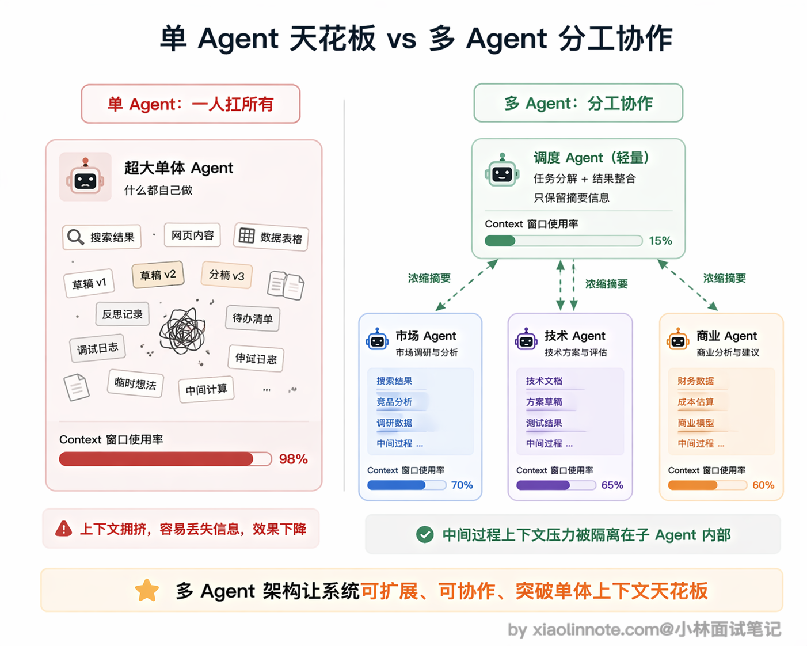
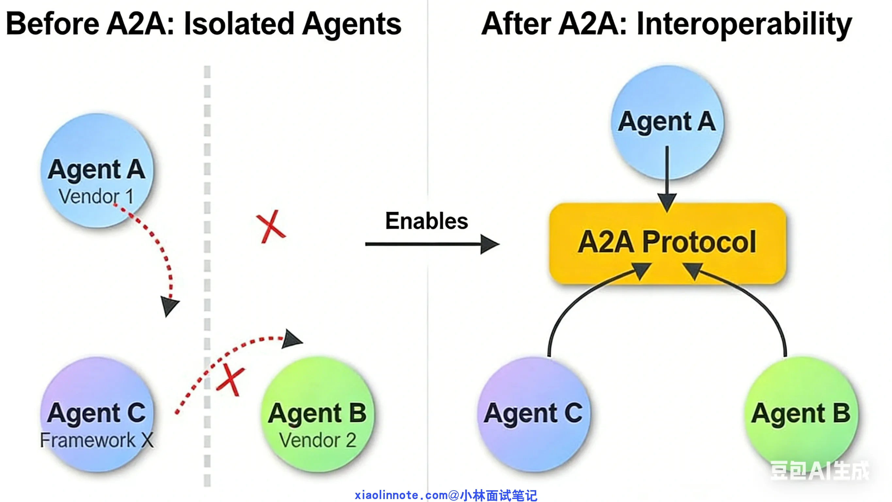
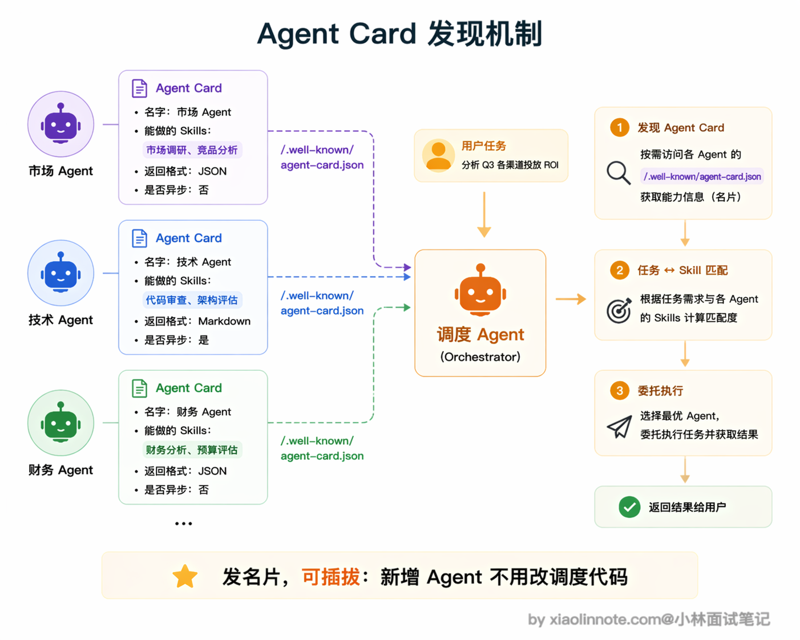
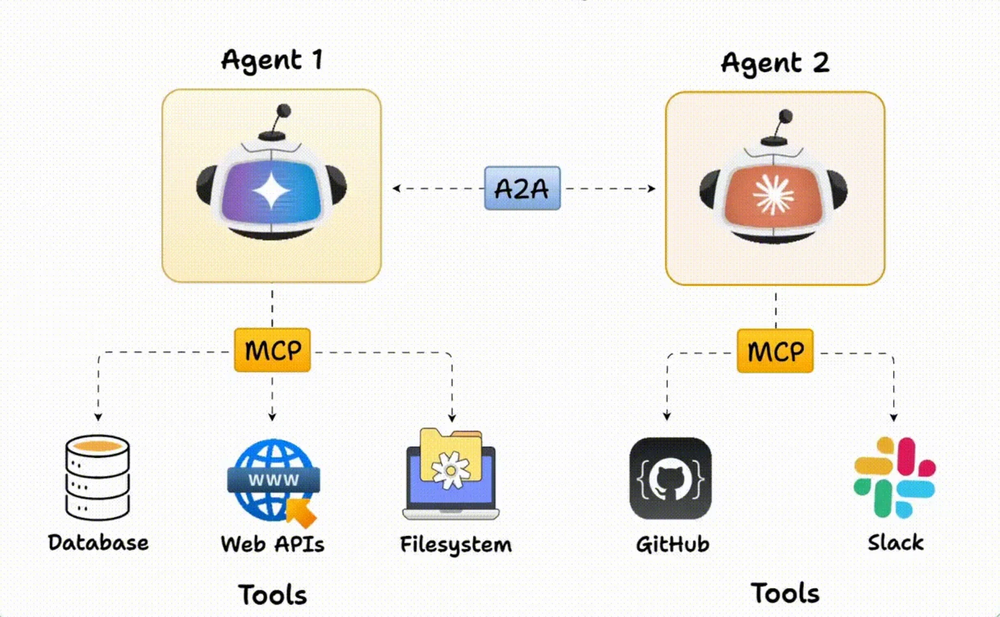
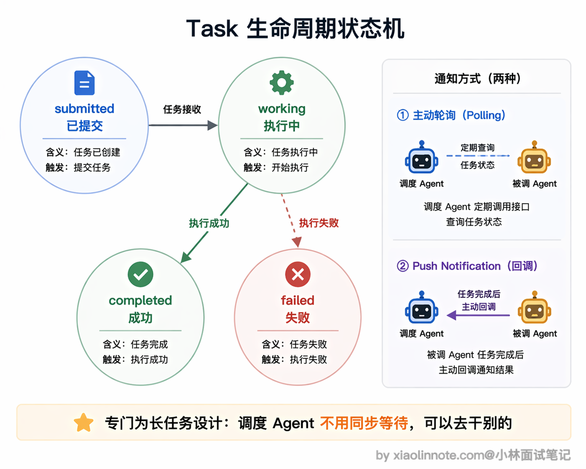
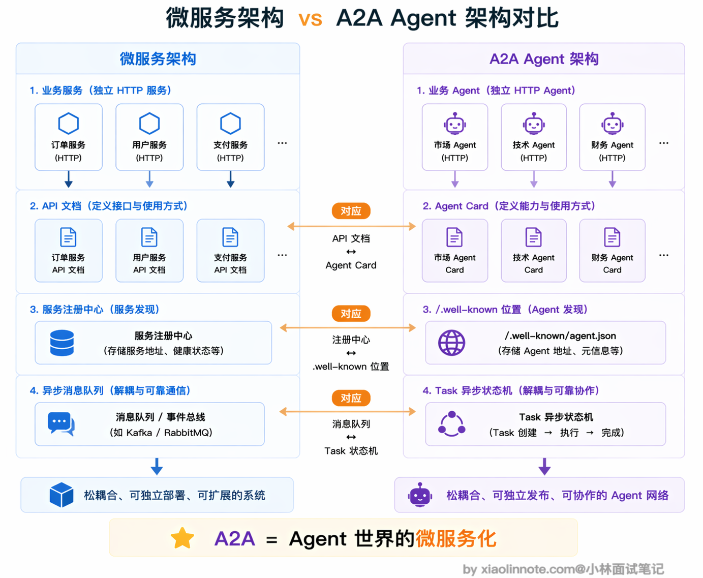
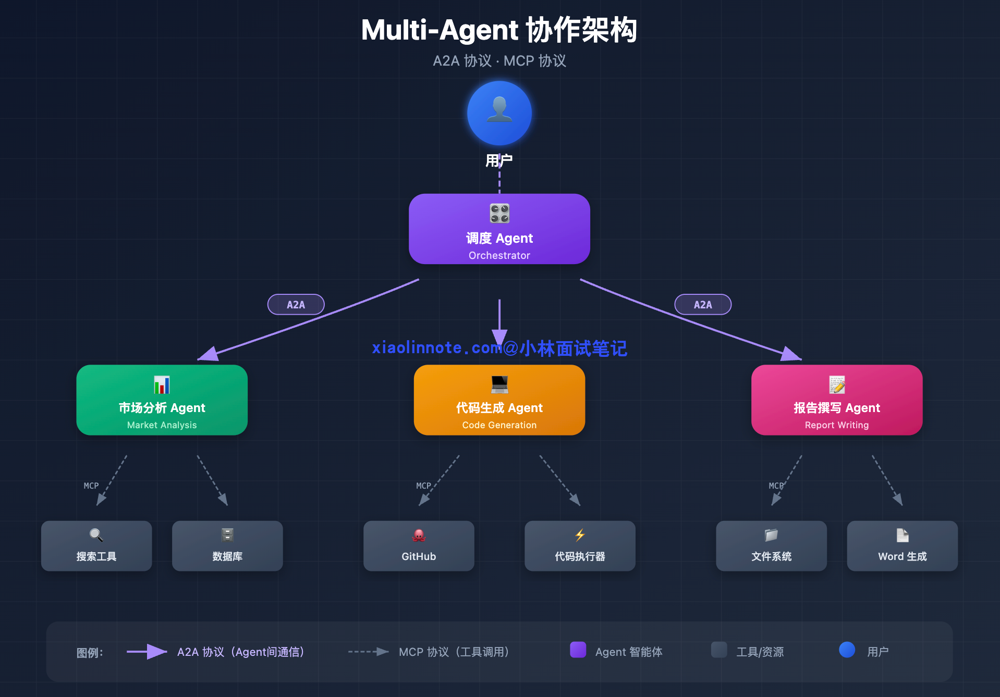
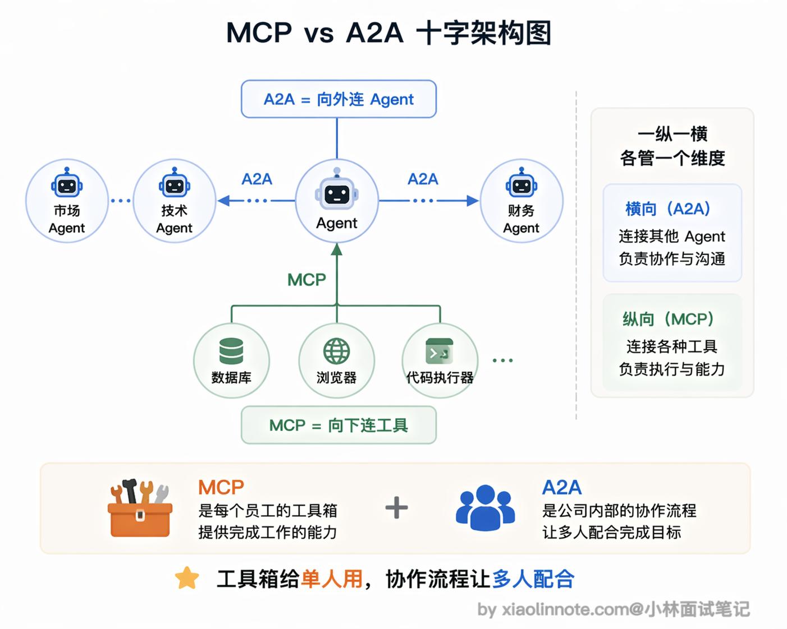

什么是 A2A 协议？它和 MCP 协议的区别是什么？
👔面试官：说说什么是 A2A 协议，它和 MCP 有什么区别？
🙋♂️我：A2A 是 Google 出的一个协议，我理解它就是 MCP 的竞品吧，Google 想自己搞一套标准来替代 MCP。
👔面试官：竞品？MCP 解决的是什么问题，A2A 解决的又是什么问题，你搞清楚了吗？这两个协议面向的对象都不一样，怎么会是竞品？
🙋♂️我：那 A2A 应该是用来让 Agent 调用工具的另一种方式？就是和 MCP 一样连工具，只是协议格式不同？
👔面试官：A2A 全称是 Agent-to-Agent，注意看名字，是 Agent 到 Agent，不是 Agent 到工具。MCP 是 Agent 连工具和数据，A2A 是多个 Agent 之间互相通信协作。一个向下连工具，一个向外连 Agent，方向完全不同。你再想想，为什么需要多个 Agent 协作，单个 Agent 不够用吗？
确实，A2A 和 MCP 经常被放在一起比较，但很多人把它们的定位搞混了。下面我从「单个 Agent 的天花板」讲起，把 A2A 的设计思路和它与 MCP 的关系理清楚。
💡 简要回答
A2A 是 Google 发布的开放协议，专门解决多个 AI Agent 之间怎么互相通信协作的问题。
我理解它和 MCP 的区别是这样的：MCP 解决的是「单个 Agent 怎么连工具和数据」，A2A 解决的是「多个 Agent 之间怎么分工协作」。
一个 Agent 通过 A2A 可以把子任务委托给另一个专业 Agent，接收方按自己的 Skill 声明承接，支持异步长任务和流式推送结果。
两者是互补的，不冲突：MCP 向下连工具，A2A 向上连 Agent，在复杂的多 Agent 系统里这两个通常都要用到。
📝 详细解析
为什么单个 Agent 不够用，上下文和专业边界
要理解 A2A 是干什么的，得先把「单 Agent 的天花板」搞清楚。
一个 Agent 的本质是：一个 LLM + 一组工具 + 一段上下文窗口。这三个维度都有自己的天花板。
首先是工具数量的限制，你不可能给一个 Agent 装 100 个工具，模型处理起来效率极低，容易混乱。
其次是上下文窗口的限制，128K tokens 听起来很多，但复杂任务积累的中间产物，搜索结果、草稿、反思记录，会很快把窗口塞满，后面的生成根本顾不上前面写了什么。
最后是专业能力的限制，同一个 Agent 既做代码审查又做市场分析，不如专门为各自任务配置或微调的 Agent 效果好。
举一个具体任务：「帮我做一份 AI 编程工具的竞品分析报告，要有行业趋势、技术对比、商业模式分析和 SWOT」。让单个 Agent 做这件事，问题是：搜索结果和草稿会把上下文撑满，等到写 SWOT 时，前面的行业趋势分析早就被挤出了有效注意力范围；而且市场调研和技术分析需要不同的知识侧重，一个 Agent 很难全面兼顾。

你可能会问，拆成多个 Agent 协作，上下文压力就真的变小了吗？
关键就在这里：调度 Agent 把「做行业趋势分析」委托给市场 Agent，市场 Agent 自己去搜几十个网页、写草稿、反复迭代，这些中间过程都在它自己的上下文里。任务做完，它只把最终结论（比如一份几百字的摘要）通过 A2A 返回给调度 Agent。
调度 Agent 的上下文里只多了一份摘要，而不是几十个网页的原文。这就把「调研过程」的上下文压力隔离在了市场 Agent 内部，调度 Agent 保持轻量，这是多 Agent 协作在上下文层面的核心收益。

解决方案很自然：把任务拆开，交给不同的专业 Agent 并行处理，最后汇总。一个「调度 Agent」负责任务拆分，「市场分析 Agent」专门做趋势调研，「技术研究 Agent」专门做工具对比，每个只需聚焦自己擅长的部分，整体效果远好于一个 Agent 包揽所有。
多 Agent 的基础问题，Agent 之间怎么互相认识？
多 Agent 系统有一个绕不开的基础问题：Agent A 要把任务委托给 Agent B，它得先知道 B 能做什么。但怎么知道呢？
最笨的方案是写死配置：A 的代码里硬编码「B 可以做竞品分析」。这样太脆了，B 的能力一变，A 的代码就得改，根本没法维护。
更好的方案是让 B 主动「发名片」，声明自己能做什么，A 来查。这就是 A2A 里 Agent Card 的设计思路。
每个 A2A Agent 都在一个约定位置发布一张 JSON 格式的名片（A2A 规范推荐的路径是 /.well-known/agent-card.json，早期版本叫 agent.json，两种路径在社区里都能看到），里面写清楚自己叫什么、能做哪类任务（Skill 列表）、支不支持流式返回、支不支持异步回调（push notification，任务完成后主动通知调用方）。任何想和它协作的 Agent，先去拿这张名片，再决定要不要把任务委托给它。
Agent Card 里最关键的是 Skill 列表，每个 Skill 描述一类能力，比如「竞品分析」「行业趋势分析」，并带有示例输入。调度 Agent 用这些 Skill 描述来做任务路由决策，「这个任务和哪个 Agent 的哪个 Skill 最匹配？」。

这套机制让整个多 Agent 系统变得可插拔：新加一个 Agent，发布它的 Agent Card，调度 Agent 就能自动发现和利用它，完全不需要改调度 Agent 的代码。

Task，A2A 里的一等公民
A2A 里任务协作的基本单位是 Task。
调度 Agent 把一段任务委托给另一个 Agent，就是创建一个 Task；接收方执行这个 Task；完成后把结果作为 Task 的产出（artifacts，可以是文本、文件等）返回。
Task 有完整的生命周期状态管理。一个 Task 刚被创建时是 submitted 状态，表示已提交、等待处理。接收方开始执行后变为 working 状态，最终根据执行结果进入 completed（成功）或 failed（失败）状态。

为什么需要这么完整的状态机？因为 A2A 专门为长时间任务设计。
一个「竞品分析」任务可能要跑几分钟，先搜索、再整理、再写报告，不可能让调度 Agent 同步等着。
所以调度 Agent 提交任务后可以去处理其他事情，通过轮询状态或者 push notification（任务完成时接收方主动回调通知）来得知任务完成了。这套状态管理机制，正是为了支持这种异步长任务协作的。
调度 Agent 的视角很干净：给 Agent B 提交一个 Task，定期查一下状态，等到 completed 了去取 artifacts。整个过程不需要知道 B 内部用了什么工具、调了几次 LLM，完全黑盒。每个专业 Agent 自己的实现对外不可见，这正是解耦的意义所在。
A2A 的架构本质，Agent 的微服务化
如果你有后端开发经验，A2A 其实不陌生：它就是 Agent 世界里的微服务架构。
在微服务架构里，每个服务是独立部署的 HTTP 服务，有自己的 API 文档，服务之间通过 HTTP 互相调用，支持异步消息队列处理耗时任务。A2A 的设计几乎照搬了这套思路，只不过把「服务」换成了「Agent」。
怎么理解这个对应关系呢？Agent Card 就像 API 文档，告诉别人「我能做什么、怎么调用我」。Task 状态机就像异步消息队列，支持提交任务后去做别的事、完成了再来取结果。而 .well-known 下的 Agent Card 就像微服务注册中心里的一条记录，让其他 Agent 能自动发现你。
所以每个 A2A Agent 对外其实就是一个 HTTP 服务，任何支持 A2A 的系统都可以发现它、向它发任务、接收结果，不绑定特定的 AI 框架，也不依赖特定的编程语言。这个设计理念和 MCP 是一脉相承的：MCP 让工具成为独立标准化服务，A2A 让 Agent 成为独立标准化服务。

A2A 和 MCP 的关系，一纵一横，各管一层
理清两者关系最简单的方式是看方向：MCP 是 Agent 向下连工具，A2A 是 Agent 向外连其他 Agent。
具体来说，一个专业 Agent 内部，用 MCP 连各种工具，比如数据库、浏览器、代码执行器，用 Function Calling 让 LLM 触发这些工具调用，这是「纵向」的连接。而多个 Agent 之间需要分工协作的时候，就用 A2A 来互相通信、委派任务、接收结果，这是「横向」的连接。两个协议解决的是完全不同维度的问题，不存在谁替代谁。
打个比方，MCP 就像公司里每个员工的「工具箱」，决定了这个人能用什么工具干活。A2A 就像公司里的「协作流程」，决定了不同岗位的人怎么分工、怎么交接任务。工具箱和协作流程是两回事，缺了哪个都不行。

在一个复杂的多 Agent 系统里，这两者通常同时在用：MCP 负责每个 Agent 和工具之间的纵向连接，A2A 负责 Agent 之间的横向协作通信。两层协议各管一个维度，合在一起才能支撑起真正复杂的 Agent 系统。

🎯 面试总结
回到开头的面试对话，最大的雷是把 A2A 当成 MCP 的「竞品」或「替代方案」，这说明没搞清楚两者面向的对象完全不同。
面试回答这道题，第一个必须说清楚的点是定位差异：MCP 是 Agent 向下连工具和数据源，A2A 是多个 Agent 之间向外互相通信协作，一纵一横，各管一层。
第二个关键点是 A2A 的核心机制：Agent Card 实现能力声明和自动发现，Task 状态机支持异步长任务协作，本质上就是 Agent 世界的微服务架构。
还要说清楚「为什么需要 A2A」，也就是单 Agent 的天花板问题：工具数量有限、上下文窗口有限、专业能力有限，复杂任务需要拆分给不同的专业 Agent 并行处理。
最后一定要强调两者是互补关系而非竞争关系，在复杂的多 Agent 系统里通常同时在用，缺一不可。